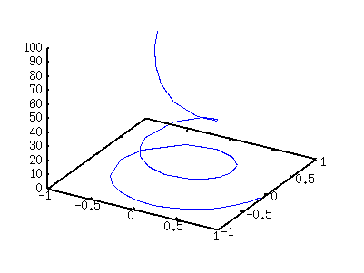
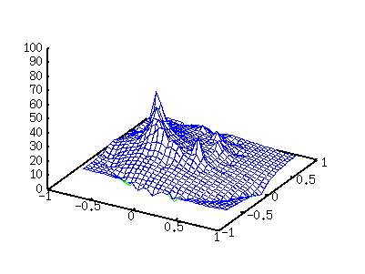

|
3�$Bl9g$r9M$($^$9!%$3$N$h$&$J%G!<%?$r�(Bsplot�$B$GI=<(�(B
�$B$9$k$H�(B3�$B
# X Y Z
9.862e-01 -8.062e-02 0.001
9.786e-01 -1.134e-01 0.002
9.720e-01 -1.382e-01 0.003
.....
-1.849e-01 -2.165e-01 80.000
-2.412e-01 -1.301e-01 90.000
-2.611e-01 -4.825e-02 100.000
gnuplot> set xrange [-1:1]
gnuplot> set yrange [-1:1]
gnuplot> set ticslevel 0
gnuplot> splot "datafile.dat" u 1:2:3 with lines

�$B$3$N$h$&$J%G!<%?$+$i�(B3�$Bset
dgrid3d�$B$r$"$i$+$8$a;XDj$7$F$*$-$^$9!%�(Bgnuplot�$B$O�(B3�$Bset dgrid3d
x-mesh, y-mash �$B$G;XDj$9$k$3$H$,$G$-$^$9!%�(B
gnuplot> set dgrid3d 30,30
gnuplot> set hidden3d
gnuplot> splot "datafile.dat" u 1:2:3 with lines

|